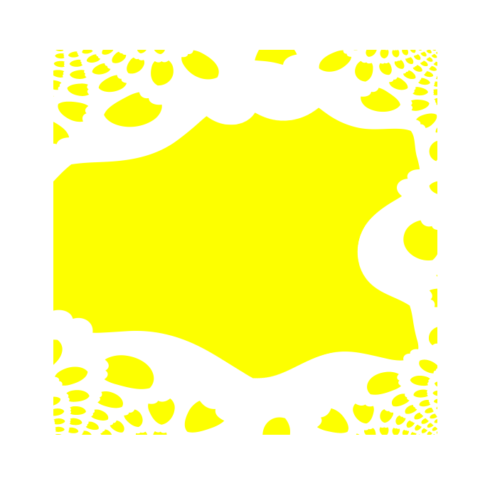

Mamasima is a new literary periodical in Lagos featuring original:⚯ Essay
⚯ Collage
⚯ Fiction
⚯ Poetry
⚯ Illustration
Issue one (print, laid paper, hand-bound) was published in November of 2025. Our last distribution event was on December 22nd, 2025. Please see the digital archive.
Bulletin: Future distribution events will be listed here. You can reach us with any specific inquiries at mamasimamag@proton.me
Issue #2
Issue #2 of Mamasima Magazine will be structured around the manifesto. We are inviting five authors to submit 300-word manifestos to be published as printable, A4 posters on this website in January of 2027. Deadline: November 1st
Issue #2 of Mamasima Magazine will be structured around the manifesto. We are inviting five authors to submit 300-word manifestos to be published as printable, A4 posters on this website in January of 2027. Deadline: November 1st
Details → Submit Here
+ Manifestos can be on any subject!
This call applies to authors who are resident in Nigeria.
+ Selected authors will receive a 'friendly contract' and a token fee of N10,000.
+ Manifestos can be on any subject!
This call applies to authors who are resident in Nigeria.
+ Selected authors will receive a 'friendly contract' and a token fee of N10,000.